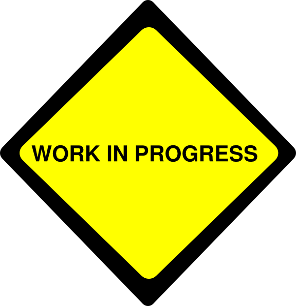

Epodreczniki-Wikitext-LaTeX
Projekt konwertera z Wikitext na LaTeX
Cel
Stworzenie środowiska REST z funkcją konwertowania plików Wikitext na pliki LaTeX
Strona jest w trakcie tworzenia. Więcej informacji już wkrótce. Github naszego projektu:
https://github.com/Lordsklilen/Epodreczniki-Wikitext-LaTex 